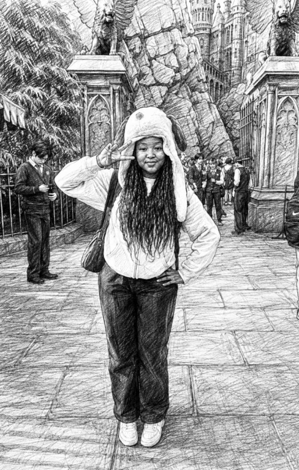

The Lia Chronicle
Wanted: One (1) Lia, For Crimes of Unlicensed Kindness
This paper once described the suspect as difficult. Forensics have since established that the alleged rock was, in fact, a hand‑warmer. Full retraction, page 5.

Authorities have named Lia as the sole suspect in a citywide outbreak of quiet, deliberate niceness — an offence she keeps denying in a tone widely mistaken for hostility.
On paper she is a stone. In practice she is the one you would want holding the door.
Be Advised
Armed with a flat delivery and a soft centre. Do not be fooled by either one.Classifieds
FOUND: one (1) heart, badly hidden. Owner insists it isn't hers. Owner is lying.— Turn the page · the file continues on 2 —
Continued from the frontDetectives describe the inquiry as the most pleasant failure of their careers. “You go in braced for a fight,” one officer said, “and you come out having been asked, flatly, whether you'd eaten.”
MethodDeliver in a register of pure indifference; act with total care. The mismatch is the entire case. She does not announce the kindness — she commits it, denies it, and leaves before anyone can thank her, a manoeuvre our stylebook files under paralipsis: raising a thing by refusing to raise it.
ObstructionEvery attempt to compliment the accused has met one syllable and a change of subject. Three reporters were thanked so efficiently they did not notice it happening.
AssessmentThe file stays open. Closing it would mean admitting we only ever had one witness statement worth printing, and it was: she's actually so sweet, you just have to talk to her.
“We charged her with being cold. The laboratory came back: it was litotes.” — this paper's own sub‑editor, since spiked
The Matter of the Warm Stone
A standing inquiry into one (1) allegedly hostile individual, found on inspection to be lovely.
Nomenclature · Etymological Annex
- Irish · lia
- a stone. See Lia Fáil, the Stone of Destiny, which roars only for the rightful heir. Consistent with the record: the subject roars, and the subject is right.
- Old Irish · líaig
- a physician. Explains the healing. Does not excuse it.
- Portuguese · lia
- “she was reading.” The subject was reading you. She has been for some time.
- Symbol · Li
- lithium — mood‑stabilising in trace exposure. Effect corroborated by everyone she has ever sat next to.
- Street aliases
- The Warm Rock · Her Ladyship of the Flat Reply · “no, she's nice, I promise”
Schedule of Charges
- One (1) count of Aggravated Sweetness, committed in daylight, without a permit.
- Grand Theft Mood — specifically, improving it and then leaving.
- Possession of a concealed soft interior, with intent to deny.
- Impersonating a hostile party: “whatever,” delivered flat. Charge stands.
- Loitering with intent to check everybody got home.
Reported Sightings
- 21:14 — subject said “don't be weird.” Witness reports feeling looked after.
- 02:30 — subject stayed up. Claims she was awake anyway. She was not.
- ★ Today — last seen getting away with it, as she always does.
Suspect Photographed Smiling; Prosecution Case Collapses
We Regret the Error
In our edition of Tuesday last, this newspaper described the subject as rude, unapproachable and probably granite direct, protective, and made of something that holds heat.
The error was ours. We ran the delivery and printed it as the message. Under this paper's own stylebook that is not reporting; it is a category mistake, and a lazy one.
Since publication the subject has: covered for someone who did not deserve it; remembered a detail nobody asked her to remember; and told this reporter to eat something, in a tone that could strip paint, while meaning it entirely.
Informed of the retraction, the subject said it was “fine.” The laboratory has again classified this as litotes (see page 4).
Set in a hurry, meant for good
The People v. Lia
In the Court of Public Affection · before a bench that had already made up its mind
Sentence
- Life, with mandatory annual celebration.
- No possibility of parole from being appreciated.
- To accept one (1) compliment per sitting without changing the subject.
- Restitution: none. The city is already up on the deal.
— 30 —
You arrived like a closed door and turned out to be the room with the heater in it.
You were “rude” for about a week. Then you were kind for good —
quietly, on purpose, and without ever asking for the credit.
So we printed it. Front page. No takebacks.
Here's to Lia — the stone that turned out to be warm.
— filed with care, and a completely straight face
WEATHER. Cold front holding at the surface. Core temperature unaffected. Outlook: warm, denied.
LOST & FOUND. One (1) reputation for being scary. Nobody is looking for it.
PERSONALS. Wanted: somebody who can tell her she's kind faster than she can change the subject.
STOP PRESS. Subject says this is “too much.” Going to press anyway.
Circulation: one (1) very important person · printed on the softest stock available